library(stringr)
library(ggplot2)
library(dplyr)
Attaching package: 'dplyr'The following objects are masked from 'package:stats':
filter, lagThe following objects are masked from 'package:base':
intersect, setdiff, setequal, unionlibrary(stringr)
library(ggplot2)
library(dplyr)
Attaching package: 'dplyr'The following objects are masked from 'package:stats':
filter, lagThe following objects are masked from 'package:base':
intersect, setdiff, setequal, unionThe dataset was independently collected from the ÖSKB Results Service using an API interface and subsequently preprocessed. It contains detailed information about male and female players competing in the national leagues, as well as their scores over the past four years, including information about when and where the games took place.
data <- read.csv("https://raw.githubusercontent.com/nikolimaj/oeskb_dashboard/master/parsed_data/game_data_latest.csv", row.names = NULL, stringsAsFactors=TRUE)
data <- data %>%
mutate(heim = ifelse(heim == "True", TRUE, FALSE)) %>%
mutate(datum = as.Date(datum, format="%Y-%m-%d")) %>%
filter(
# remove extreme outliers (probably coming from players giving up mid game)
kegel > quantile(kegel, 0.001, na.rm = TRUE) - 1.5 * IQR(kegel, na.rm = TRUE)
)head(data) spieler_id spiel_id kegel sp mp heim startbahn dg
1 sfE1aYgXo4Dzyzic5Bc2 NYskl398ykThHMXFjgQS 507 1 0 TRUE 1 1
2 WQgQkQvsnqxWl9FbYSLw NYskl398ykThHMXFjgQS 494 1 0 TRUE 3 2
3 4VFNP62IjavGQwMyMHMP NYskl398ykThHMXFjgQS 573 4 1 TRUE 1 3
4 pjNw2kHn208eeXIgNadv NYskl398ykThHMXFjgQS 536 2 0 TRUE 1 2
5 FiD1cqbIRHXjngAXvU9D NYskl398ykThHMXFjgQS 453 1 0 TRUE 3 3
6 Alu2SfPu9Cz5zfb7PMWf NYskl398ykThHMXFjgQS 583 3 1 TRUE 3 1
datum uhrzeit bahn liga name jahrgang land
1 2021-10-17 11:00 VSE Sportplatz SL Damen VECEROVA Anna 2003 CZE
2 2021-10-17 11:00 VSE Sportplatz SL Damen KAPFINGER Romana 1960 AUT
3 2021-10-17 11:00 VSE Sportplatz SL Damen FUTSCHEK Caroline 2000 AUT
4 2021-10-17 11:00 VSE Sportplatz SL Damen LAIBACHER Vanessa 1994 AUT
5 2021-10-17 11:00 VSE Sportplatz SL Damen TABERNIK Heidemarie 1950 AUT
6 2021-10-17 11:00 VSE Sportplatz SL Damen SCHWINGER Lisa 1998 AUT
passnummer geschlecht
1 136008 w
2 136133 w
3 136091 w
4 136024 w
5 136143 w
6 136046 wcat("Number of rows:", nrow(data), "\nNumber of columns:", ncol(data))Number of rows: 30496
Number of columns: 17national_leagues <- data %>%
filter(str_detect(liga, "SL|BL"))
ggplot(national_leagues, aes(x = liga, y = kegel, fill = geschlecht)) +
geom_boxplot() +
labs(x="Liga", y="Scores", fill="Geschlecht")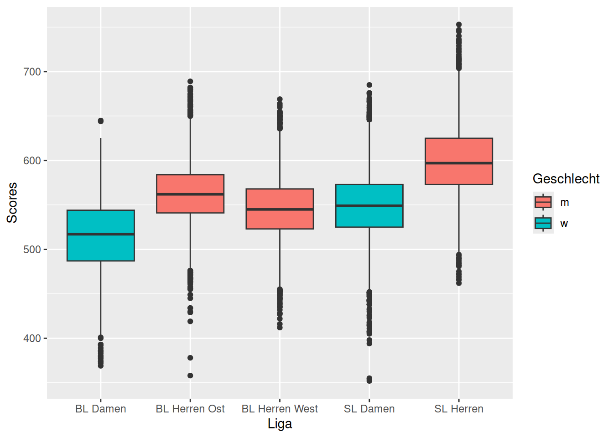
ggplot(national_leagues, aes(x = liga, y = kegel, fill = geschlecht)) +
geom_violin() +
labs(x="Liga", y="Scores", fill="Geschlecht")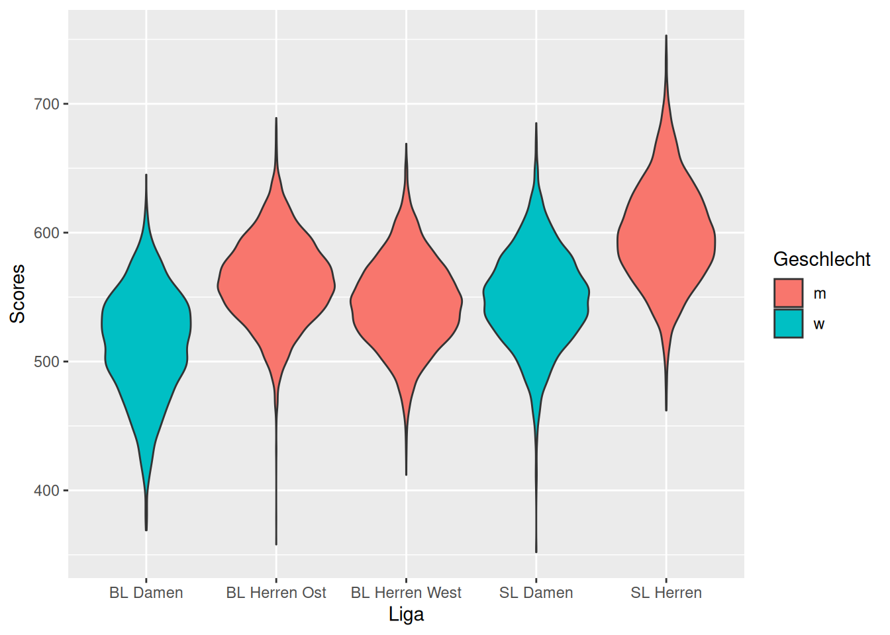
herren <- national_leagues %>%
filter(geschlecht == "m")
ggplot(herren, aes(x = kegel, fill = liga)) +
geom_density(alpha = 0.5) +
labs(x = "Scores", y = "Density", fill = "Liga")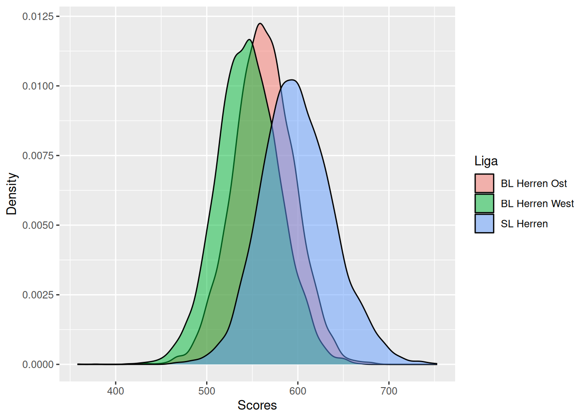
female_2002 <- data %>%
filter(geschlecht=="w") %>%
filter(jahrgang == 2002)
ggplot(female_2002, aes(x = datum, y = kegel, color=name)) +
geom_smooth(se=TRUE, method = "loess", span=0.9) +
labs(x = "Date", y = "Score", color = "Spielerin")`geom_smooth()` using formula = 'y ~ x'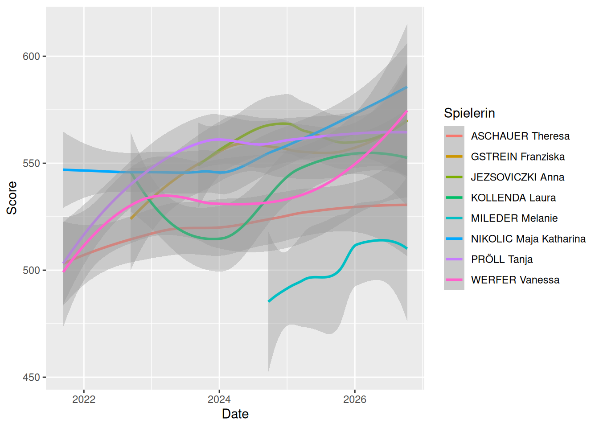
sl_damen = data %>%
filter(liga == "SL Damen") %>%
filter(jahrgang == 2002) %>%
filter(land == "AUT") %>%
filter(datum >= "2024-08-01")
ggplot(sl_damen, aes(x = kegel, fill = name)) +
geom_density(alpha = 0.5) +
labs(x = "Scores", y = "Density", fill = "Spielerin")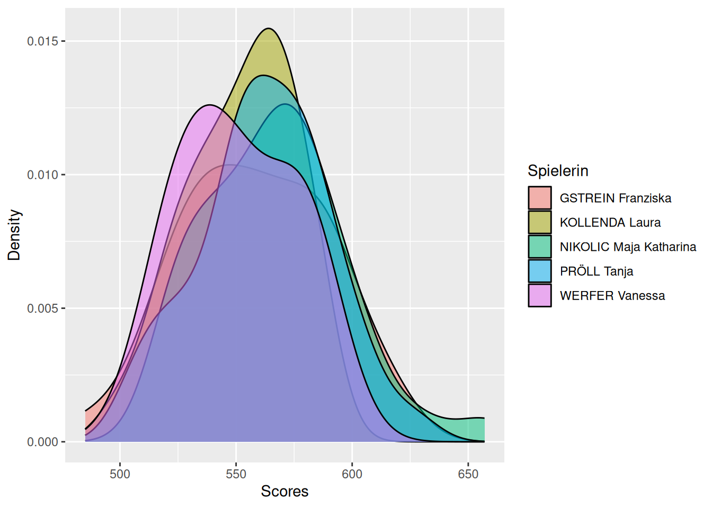
ggplot(sl_damen, aes(x = name, y = kegel)) +
geom_boxplot() +
labs(x="Spielerin", y="Scores")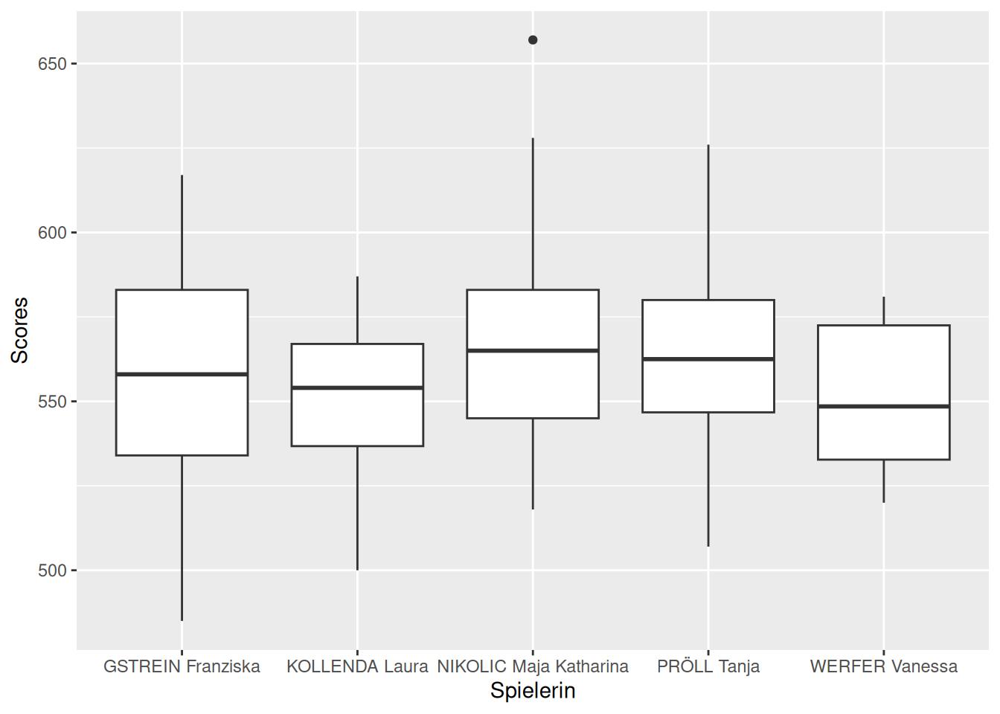
ggplot(sl_damen, aes(x = name, y = kegel)) +
geom_violin() +
labs(x="Spielerin", y="Scores")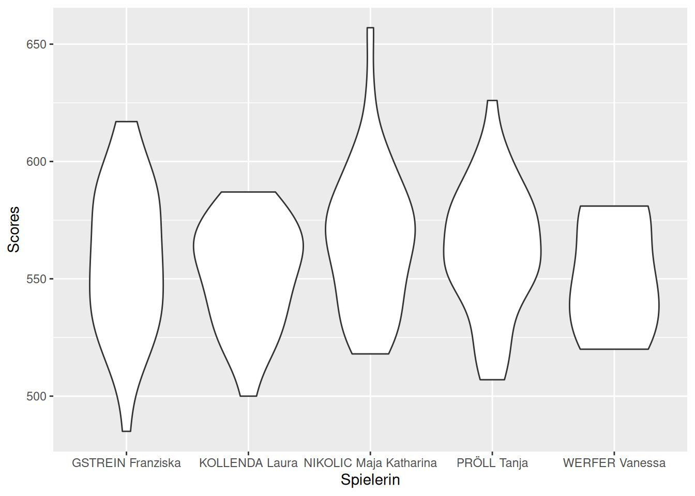
lanes_sl_damen = data %>%
filter(liga == "SL Damen") %>%
filter(datum >= "2024-08-01")
ggplot(lanes_sl_damen, aes(x = bahn, y = kegel)) +
geom_boxplot() +
labs( x = "Bahn", y = "Score") +
theme_minimal() +
theme(axis.text.x = element_text(angle = 90, hjust = 1))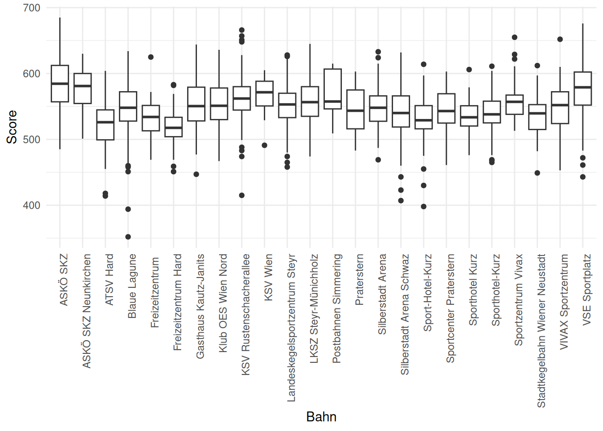
ggplot(lanes_sl_damen, aes(x = bahn, y = kegel)) +
geom_violin() +
labs( x = "Bahn", y = "Score") +
theme_minimal() +
theme(axis.text.x = element_text(angle = 90, hjust = 1))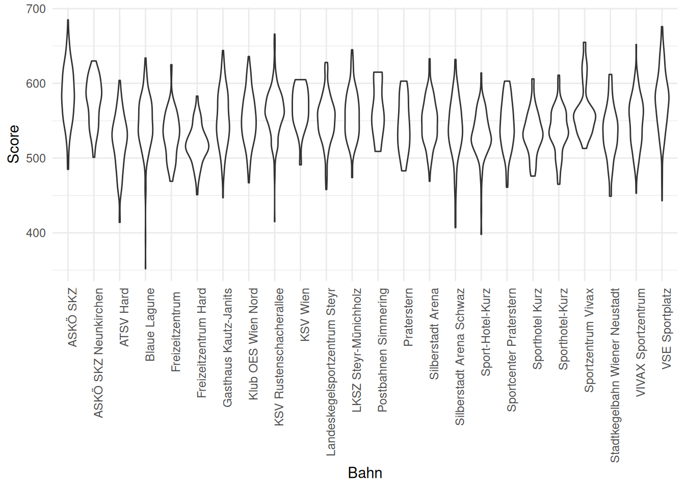
heatmap_data <- lanes_sl_damen %>%
mutate(heim = ifelse(heim, "Heim", "Auswärts")) %>%
group_by(bahn, heim) %>%
summarise(avg_kegel = mean(kegel, na.rm = TRUE))`summarise()` has regrouped the output.
ℹ Summaries were computed grouped by bahn and heim.
ℹ Output is grouped by bahn.
ℹ Use `summarise(.groups = "drop_last")` to silence this message.
ℹ Use `summarise(.by = c(bahn, heim))` for per-operation grouping
(`?dplyr::dplyr_by`) instead.ggplot(heatmap_data, aes(x=bahn, y=heim, fill=avg_kegel)) +
geom_tile() +
geom_text(aes(label = round(avg_kegel, 0))) +
theme_minimal() +
theme(axis.text.x = element_text(angle = 90, hjust = 1)) +
labs(x = "Bahn", y= "Mannschaft", fill="Average Score")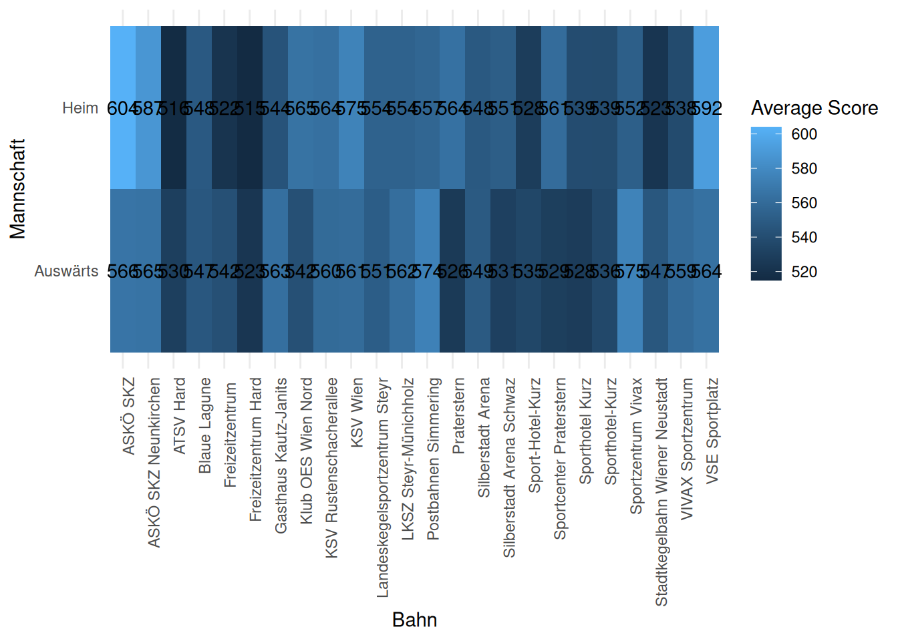
ggplot(data, aes(x=jahrgang)) +
geom_density()Warning: Removed 14 rows containing non-finite outside the scale range
(`stat_density()`).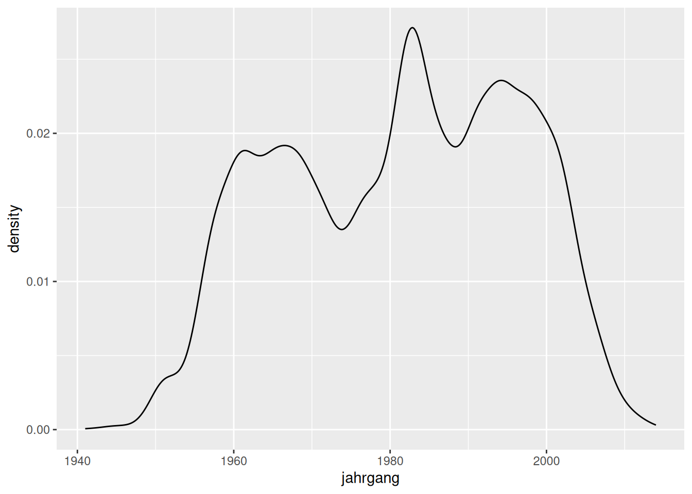
avg_score_spieler <- data %>%
filter(datum >= "2024-08-01") %>%
group_by(spieler_id) %>%
summarize(
avg_kegel = mean(kegel, na.rm = TRUE),
jahrgang = first(jahrgang),
geschlecht = first(geschlecht)
)
ggplot(avg_score_spieler, aes(x=jahrgang, y=avg_kegel, color=geschlecht)) +
geom_point() +
geom_smooth() +
theme_minimal() +
scale_x_continuous(breaks= seq(1940, 2015, by=5)) +
labs( x = "Jahrgang", y = "Average Score", color="Geschlecht")`geom_smooth()` using method = 'loess' and formula = 'y ~ x'Warning: Removed 1 row containing non-finite outside the scale range
(`stat_smooth()`).Warning: Removed 1 row containing missing values or values outside the scale range
(`geom_point()`).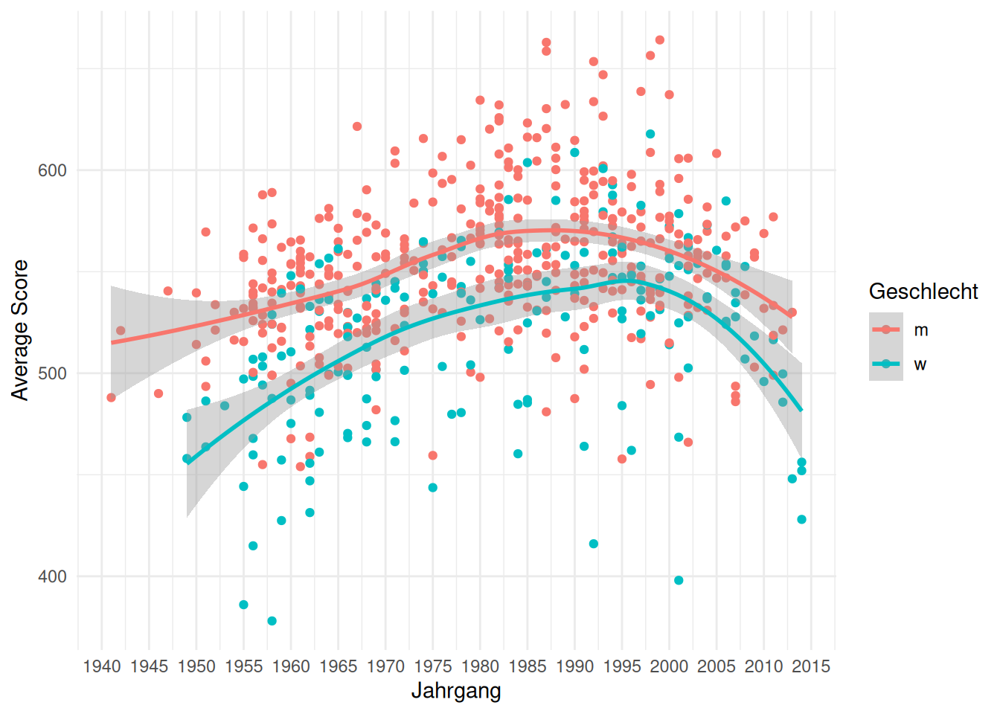